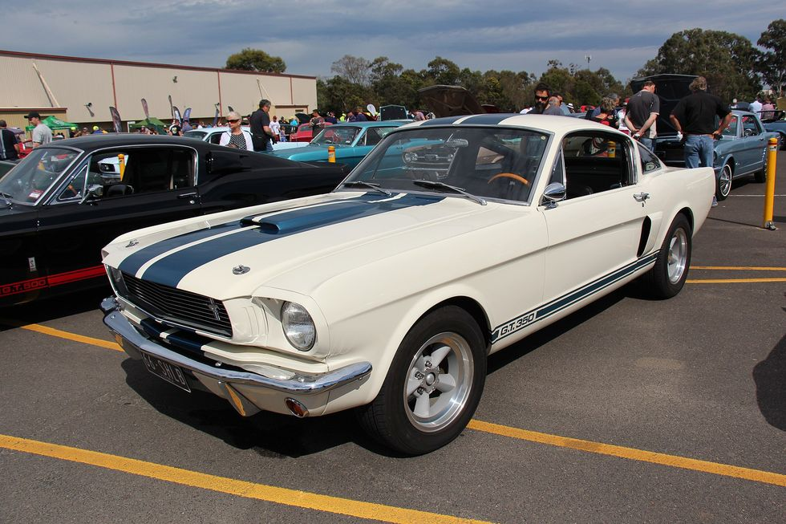

Mustang Shelby GT350
The legendary 1965 Mustang Shelby GT350 was a serious high- performance machine. In fact, some buyers that very first year felt these cars were a little too hardcore, and at the same time Shelby was on a rampage to cut costs. So for 1966, Shelby replaced, deleted, or made optional some of the car’s signature high performance features like the adjustable Koni shocks, the fiberglass hood, free-flowing (and loud) side exhaust outlets, and that fully locking Detroit Locker rear differential.